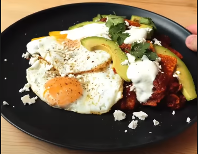

Chilaquiles is a traditional mexican dish consisting of fried corn tortilla with a delicious red sauce
- Corn tortilla chips
- 2 tomatoes
- 1 medium white onion
- 4 jalapenos
- 3 ancho chilies
- You can add more or less chilies depending of how much spicy you like, but this is a standard
- 2 garlic gloves
- 250 g corn tortilla chips
- Sour cream
- 1 avocado
- Cheese
- First cut tomatoes in half, onions in quartes a, cut off the top of jalapenos and peel the garlic
- Now put them in a low-medium heat pot
- Let them get roast and flip once are done
- Repeat until the veggies are fully roasted
- Then cover them with water an let it boil for 2-3 minutes
- You can use chicken stock instead of water to add extra flavor
- Put the water and veggies into a blender also add some dried ancho chilies
- Now blend and give it a taste
- Add salt blend an taste, repeat this process until is as salty as you like
- In a medium heat pan put some oil, let it warm up and then add the salsa and brig it to boil for 2-3 minutes
- Once has boiled add the corn tortilla chips and mix until they star getting soft
- If you want a crunchier experience take the chips out as soon as they incorporate with the salsa
- If you want a soft experience let mix for more time
- And now you can serve
- Top with some avocado, sour cream an cheese
- If you want the full experience side with one or two fried eggs
- Time to enjoy